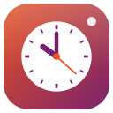

Clocks for Ubuntu
World clocks, alarms, timers, stopwatch and focus sessions

About
HRHsofts Clocks keeps time for you and the people you work with.
- World clocks for over 4,000 cities, searched offline, with day or night, the time difference and today's sunrise and sunset
- A meeting planner that finds the hours that suit everyone's working day
- Alarms that repeat on chosen days, with snooze, gentle wake and five built-in tones; they ring even when the window is closed
- Any number of named timers, quick presets and lengths like "1h 20m"
- A stopwatch with lap times, best and worst laps and CSV export
- Focus sessions (Pomodoro) that can hold notifications while you work
- Reminders from HRHsofts Notes and other apps over D-Bus
Screenshots

Install
From the terminal (adds the signed HRHsuite repository so Clocks keeps itself updated):
wget -qO- https://hrhsofts-repos.github.io/apt/install.sh | sudo sh -s -- clocksIf the repository is already set up, or on HRHsofts Ubuntu:
sudo apt install hrhsofts-clocksOr download the .deb and install it with App Center or sudo apt install ./hrhsofts-clocks_1.0.0-1_all.deb.
- Package
hrhsofts-clocks- Version
- 1.0.0
- Released
- 2026-11-12
- Size
- 107.5 KB
- SHA-256
90db7ffc8509d7333422772ca30976eb6ea685546197085eed2f3b374fb1a4b9- License
- GNU GPL 3.0 or later (free software)
- Requires
- Ubuntu 26.04 or later, 64-bit (amd64)
What's new
Version 1.0.0 · 12 Nov 2026
- New app: world clocks for over 4,000 cities (offline search) with day or night, time difference, sunrise and sunset, and a meeting planner
- Alarms on chosen days with snooze, gentle wake and five tones; they ring with the window closed
- Named timers with presets, a stopwatch with laps and CSV export, and focus (Pomodoro) sessions
- Other apps such as HRHsofts Notes can add reminders over D-Bus
All HRHsofts apps · Get HRHsofts Ubuntu with Clocks preinstalled